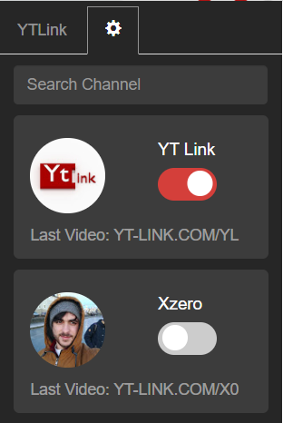
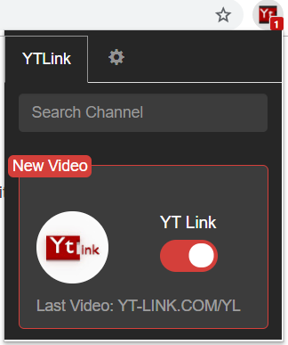
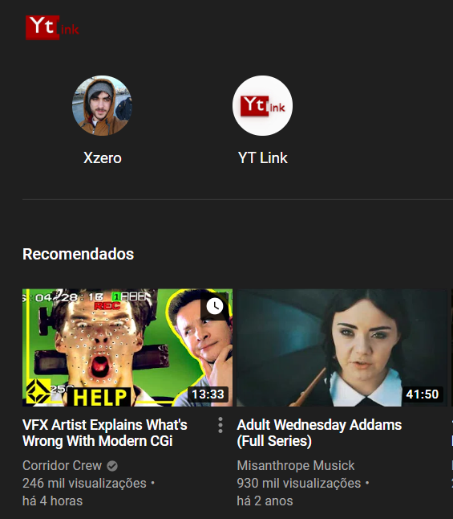

The goal of YT-Link is for content creators on youtube to have a dedicated link that'll always redirect to their latest video.
This can eliminate the problem of having to constantly update the URL for your most recent video on other social media platforms.
The
YT-Link is a short code defined by you to be linked to your youtube channel, with this
code you
and your followers can reach your last video by simply going to:
yt-link.com/CODE.
Contact us at info@yt-link.com
YTLink Chrome Extension
If you use Google Chrome as a web browser we have the perfect tool for you to keep up with your favorite channels.
1 - Select channels
2 - Real-time notifications
3 - Discover our partners
Frequently Asked Questions
1 - How do I create a code?
All you have to do is login with your google account (the one associated to your youtube account) and then type the pretended CODE and your prefered e-mail address.
2 - What should my code look like?
We believe in short memorable codes so that it’s easier for your followers to remember, that being said the code can be anything you want, just keep in mind that if you use a very lengthy one it’s likely that people won’t be able to remember it.
The code can't have more than 10 characters.
3 - Do I have to register?
Our platform does not require any type of registration since we believe in simplifying the experience as much as possible. The only thing you’ll need to do is login with your google account that's associated with your channel and then type the code you want to use and an e-mail address so that we have a way of contacting you.
4 - The code I want is already registered, what do I do?
The first thing we recommend is that you should try another code, maybe a variation of the one you initially wanted. If you absolutely want a specific code and it has already been taken you can contact us so we can see what we can do - maybe an arrangement between you and the user that has the code you want can be the solution. In the future we’ll have a way for you to contact the user with the code you want directly through our platform.
5 - Can I change my code?
Short answer is no, but if you really think you need to change it you can send us an email at info@yt-link.com explaining why you want to change it and maybe we can do it for you.
6 - I don't have any videos, where will my code redirect to?
We decided to have the link redirect to our website if there is no video to redirect to.
7 - What are the points and how do I get them?
Each code will have certain points that represent the amount of times people have opened the YT-Link.
The user with the most points will be shown at the top of the page with a red background.
8 - What is a partner?
A YT-Link partner is a user of significance relevance in the platform. These users are usually high performers in the platform (high number of points) and have some special perks by entering our program.
Partner Perks
- Presence on the YTLink extension
- Personalized chat emotes
- Their own chat on YTLink
- Special placement on our platforms and social media
You can become a partner if we see that you have a big impact in our platform or by supporting us on patreon.
You can also send us a private message on our social media.
9 - What is the YTLink Chrome Extension?
If you use the Google Chrome browser to navigate the web we have a tool for you that will help you keep up to date with your favorite youtube channels.
With the extension you can browse through our list of partners and select the ones you want to be notified about. After selecting your prefered channels you'll be notified in real-time everytime they post a new video.
The extension doesn't require any type of registration.
10 - Why does the content creator I'm looking for doesn't appear on the extension?
Only YTLink partners are present on our extension, if you believe they would be a good addition as a partner try to make them know about our existence or send us an e-mail so we can try to reach out to them.
11 - Why do some channels have a star icon on the name?
Those channels with a star are channels that were not created by the owner of the channel but were added to our platform by the YTLink team.
Usually they belong to larger channels which we believe are a good addition to our extension.
You'll also notice that those channels do not have the number of subscribers or number of points